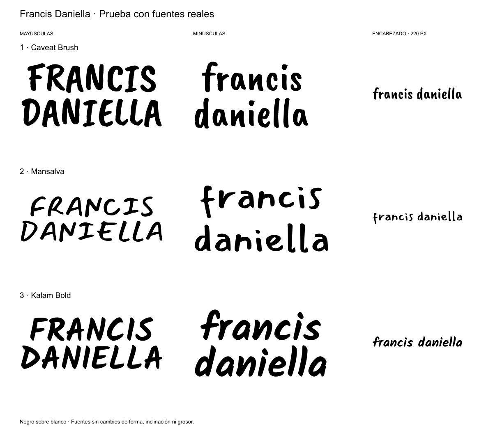
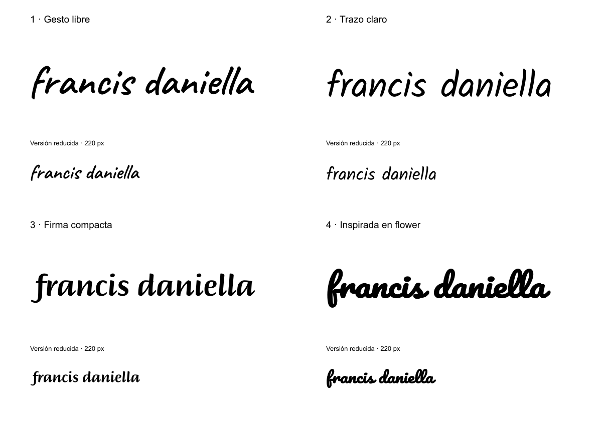
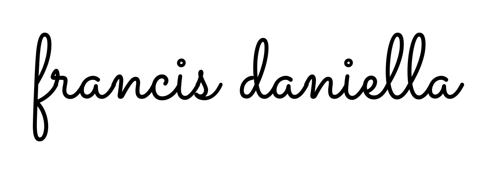

Francis Daniella · Propuestas de logo
Nueva prueba · Caveat Brush, Mansalva y Kalam Bold
Tres fuentes reales, en mayúsculas y minúsculas, con muestras pequeñas para el encabezado.

Nueva prueba · 1A y 1B en minúsculas
Adaptación de la primera lámina sans orgánica. 1A conserva formas redondeadas y abiertas; 1B explora un remate más marcado en la a y pequeños cambios de espaciado. Ambas escriben francis daniella en dos líneas.

Selección provisional · 3A y 3B
Estas son las dos propuestas elegidas para continuar. Conservamos el trazo y la composición de esta lámina como referencia para las siguientes pruebas.

Exploraciones anteriores · Minúsculas compactas y estilo flower
Cuatro direcciones, con una muestra de cada logo a 220 px de ancho.

Exploración anterior · Minúsculas manuscritas
Composición apilada y versión horizontal para el encabezado. SVG vectoriales con fondo transparente.

Descargar SVG horizontal · Descargar SVG apilado · Ver ambas composiciones


Ocho exploraciones tipográficas. A: cercana a la referencia. B: personalizada.
1 · Sarah Stanford — Sans orgánica
1A: formas abiertas y redondeadas. 1B: pierna de la R curva y ajuste de proporciones y espaciado.

2 · Últimos dias — Geométrica
2A: formas geométricas y encuentros expresivos. 2B: travesaños de la A y conexión de las dos L.

3 · Allie rose — Manuscrita
3A: trazo monolineal con ritmo libre. 3B: inclinación y conexiones más controladas. Ambas adaptadas a mayúsculas.

4 · Malu moura — Grotesca compacta
4A: peso grueso y composición cerrada. 4B: cambios en la A, diagonales y ajuste óptico entre letras.